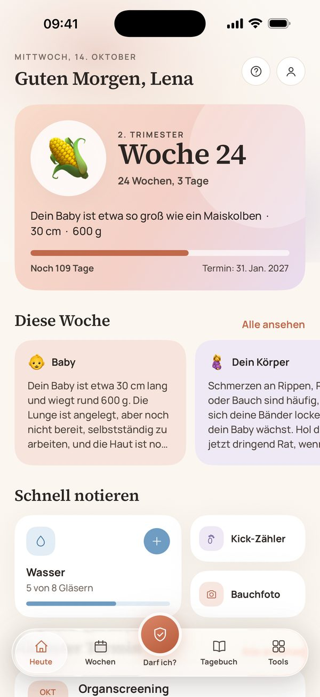
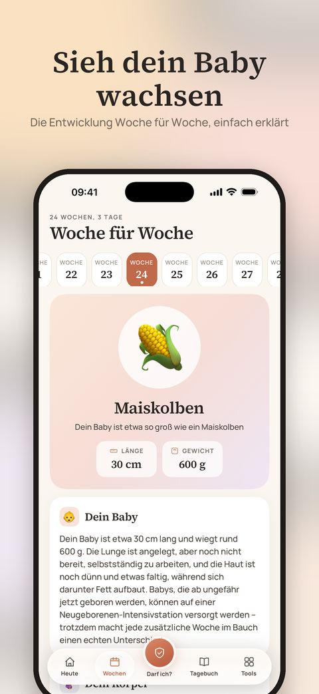
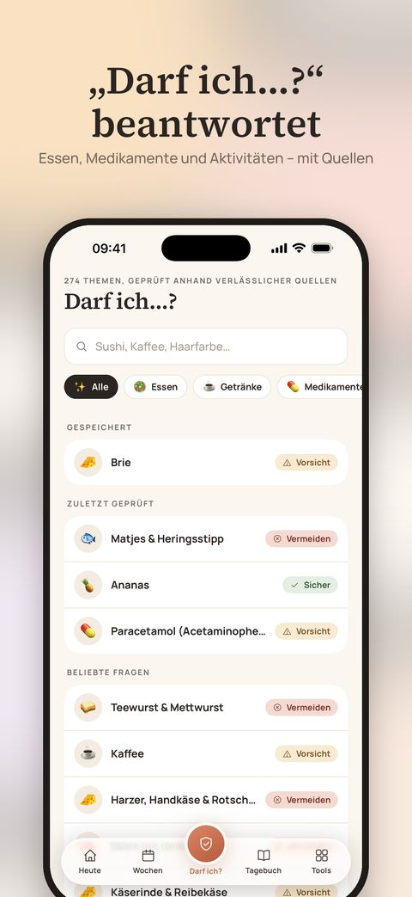
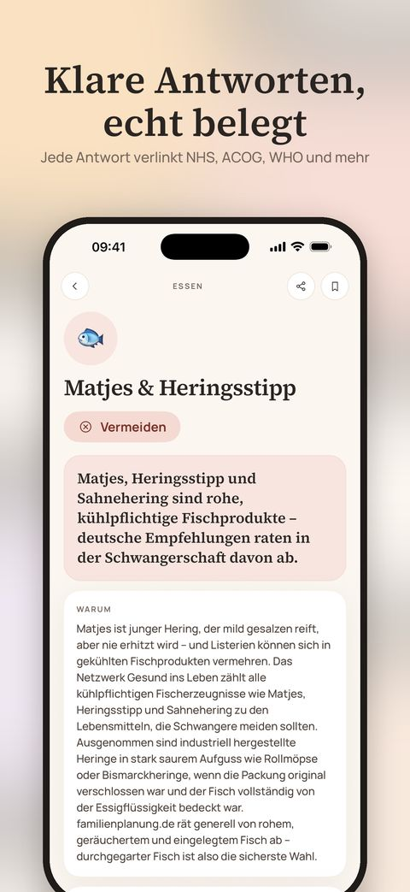
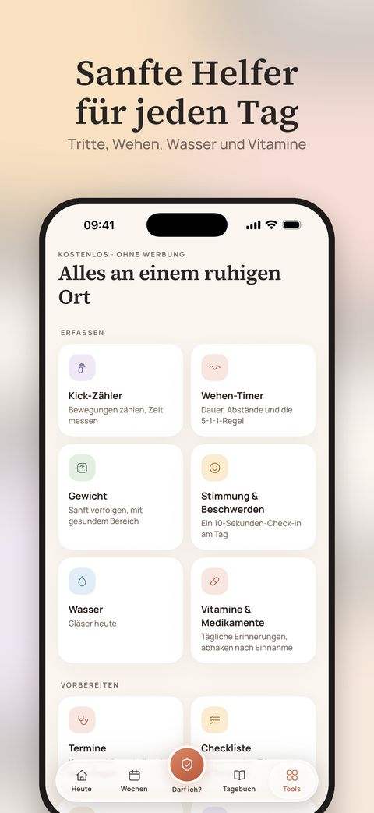
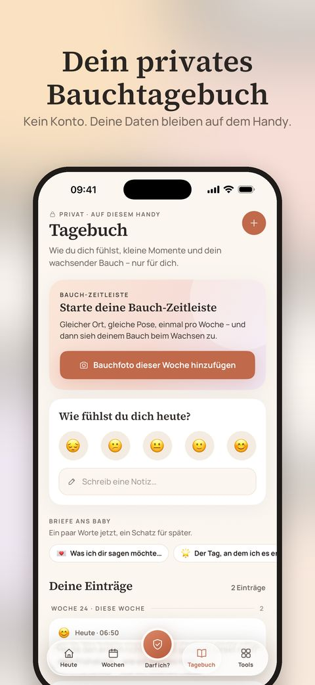

English · Türkçe · Español · Deutsch · Français · Português
Eine ruhige Begleitung für die nächsten neun Monate.
Begleitung Woche für Woche, klare Antworten auf „Darf ich …?“ mit echten Quellen und sanfte Helfer für jeden Tag – alles privat, direkt auf deinem iPhone.
Laden im App StoreKostenlos nutzbar · iPhone · Kein Konto nötig

Alles, was du brauchst – sanft an einem Ort
Woche für Woche
Wie groß dein Baby ist, was sich gerade entwickelt, was du spüren könntest und drei praktische Tipps – für jede Woche von 1 bis 42.
„Darf ich …?“ beantwortet
270+ Lebensmittel, Medikamente, Beautyprodukte und Aktivitäten – jeweils mit klarer Einschätzung, Begründung und Links zu den Empfehlungen dahinter.
Ist das normal?
55 häufige Beschwerden ruhig erklärt – mit dem, was hilft, und klaren Zeichen, wann du deine Hebamme, deine Arztpraxis oder den Notruf anrufen solltest.
Sanfte Helfer
Kick-Zähler und Wehen-Timer mit Live-Aktivitäten auf dem Sperrbildschirm, dazu Widgets, Termine, Wasser, Vitamine und mehr.
Ein privates Tagebuch
Bauchfotos, Stimmungen, Notizen und Briefe an dein Baby. Es gibt kein Konto – dein Tagebuch verlässt nie dein Handy.
Passend zu deinem Land
Auf English, Türkçe, Español, Deutsch, Français und Português – mit regionalen Lebensmitteln, nationalen Empfehlungen und der Notrufnummer deines Landes.
Ein genauerer Blick





🔒 Privat von Grund auf
Keine Werbung, keine Analysen, kein Tracking und kein Konto. Alles, was du eingibst, bleibt auf deinem Gerät. Käufe wickelt Apple ab; zur Bestätigung dient eine anonyme ID.
✨ Marigold Plus – optional
Die Grundfunktionen sind kostenlos. Plus ergänzt einen PDF-Bericht für deinen Arzttermin, dein Tagebuch als Erinnerungsbuch und eine Collage deiner Bauchfotos – monatlich mit kostenloser Testphase oder einmalig als Pregnancy Pass.
Marigold bietet allgemeine Informationen auf Grundlage öffentlicher Gesundheitsempfehlungen. Es ist keine medizinische Beratung und kein Medizinprodukt. Folge immer den Empfehlungen deiner Hebamme oder deiner Ärztin bzw. deines Arztes und wähle im Notfall die örtliche Notrufnummer.
Von den Machern von Baby Bloom – eine sanfte Begleitung für das Leben mit deinem Neugeborenen. Baby Bloom entdecken →